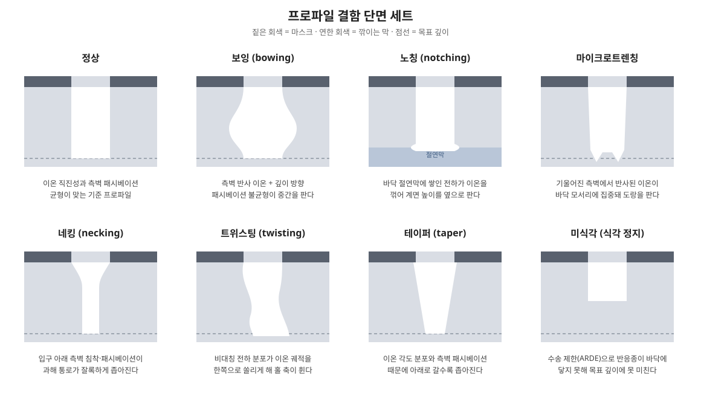

로딩 효과·ARDE·프로파일 이상처럼 실제 식각이 이상에서 벗어나는 현상들과, 공정을 평가하는 지표들.
공정 지표와 비이상 현상
| 항목 | 의미 / 원인 |
|---|---|
| 식각 속도, 균일도 | 웨이퍼 전체에서 같은 속도로 깎이는가 |
| 선택비 | 깎을 막 ÷ 마스크·하부막 식각 속도 |
| CD, 프로파일 각도 | 원하는 선폭·수직도 유지 |
| ARDE | 좁고 깊은 구멍일수록 느려짐 — 이온·라디칼이 바닥까지 못 가고 생성물이 못 빠져나옴 |
| 마이크로로딩 | 패턴이 빽빽한 곳과 성긴 곳의 속도 차이 — 라디칼 국부 소모 |
| Bowing, Twisting | 측벽에 반사된 이온, 전하 축적으로 구멍이 휘거나 비틀림 (HARC의 핵심 난제) |
| Notching, 마이크로트렌칭 | 절연막 표면 전하로 이온이 휘어 바닥 모서리가 파임 |
| 플라즈마 유도 손상 | 게이트 산화막 차징, UV에 의한 결합 절단, 이온에 의한 격자 손상 |

ARDE는 좁고 깊은 구조에서 라디칼과 이온이 바닥까지 덜 도달하고, 반응 생성물이 덜 빠져나오기 때문에 생긴다. 3D NAND 채널홀처럼 종횡비가 수십 : 1에 이르는 식각에서는 이 감소가 생산성을 좌우한다. Oehrlein 등(2024)의 식각 로드맵 논문은 일반 식각과 극저온 식각의 종횡비 의존성을 비교하며, 극저온 식각을 고종횡비 식각의 유력한 방향으로 다룬다.
현상별 메커니즘 — 왜 생기는가
위 표의 현상들은 원인이 셋으로 갈린다. 전하가 만드는 것(노칭·트위스팅), 이온의 반사와 패시베이션 분포가 만드는 것(보우잉·마이크로트렌칭), 수송이 만드는 것(ARDE·로딩)이다. 갈래를 알면 대응이 왜 그 모양인지가 읽힌다.

노칭 — 절연막 위의 전하가 이온을 꺾는다. 식각이 바닥의 절연막(STI 산화막, BOX 등)에 닿으면, 그 지점부터 전하의 출구가 막힌다. 이온은 방향성이라 바닥까지 그대로 들어와 양전하를 쌓고, 전자는 등방적으로 움직여 구조의 윗부분과 측벽 상부에 음전하를 쌓는다(전자 음영, electron shading). 절연막 표면의 양전하는 뒤이어 들어오는 이온을 옆으로 밀어내고, 궤적이 휘어 측벽 하단 — 정확히 절연막과의 계면 높이 — 을 옆으로 파낸 것이 노칭이다. 그래서 노칭은 식각 말미, 하부 절연막이 드러난 뒤의 과식각 구간에서 자라며, 깊이가 아니라 절연막이 노출된 시간에 비례한다. 펄스 바이어스나 저주파 바이어스가 약이 되는 이유도 여기 있다 — 꺼진 구간에 전자와 이온이 번갈아 닿아 쌓인 전하를 중화할 시간을 주기 때문이다.
보우잉 — 측벽이 받는 이온과 잃는 패시베이션의 불균형. 측벽 중간이 부풀어 파이는 데는 두 경로가 겹친다. 첫째, 입구나 마스크의 패싯(facet)에 맞고 반사·산란된 이온이 측벽 중간을 때린다. 둘째, 깊이 방향의 패시베이션 분포 자체가 균일하지 않다 — 패시베이션 종도 라디칼이라 깊을수록 굶는데(Knudsen 수송), 입구 근처는 이온이 폴리머를 계속 걷어내 상대적으로 얇다. 두 효과가 겹쳐 "가장 보호가 약한 높이"가 측벽 중간 어딘가에 생기고, 그곳부터 옆으로 파인다. 보우잉이 특정 깊이에서 최대가 되는 단면 모양은 이 경쟁의 지문이다.
트위스팅 — 깊은 홀에서의 비대칭 전하. 종횡비가 커지면 홀 바닥과 측벽의 전하 분포가 조금만 비대칭해져도 이온 궤적이 한쪽으로 쏠린다. 비대칭의 씨앗은 입구 형상·플라즈마 불균일·앞선 식각의 미세한 기울기 같은 초기 편차인데, 깊어질수록 편차가 증폭되어 홀 축 자체가 휘거나 비틀린다. 대칭을 깨는 원인이 무작위여서 웨이퍼 안에서 방향이 제각각인 것이 특징이며, 그래서 트위스팅은 평균 프로파일이 아니라 편차(분포) 로 나타난다. 노칭과 같은 전하 문제이지만, 노칭이 "계면 높이"라는 정해진 자리에서 생기는 것과 달리 트위스팅은 대칭성 그 자체가 무너지는 현상이다.
마이크로트렌칭 — 반사가 바닥 모서리에 모인다. 측벽이 완전히 수직이 아니라 살짝 기울어 있으면, 수직으로 들어온 이온이 측벽 하부에 스치듯 맞고 반사되어 바닥 모서리의 좁은 띠에 집중된다. 반사된 이온은 에너지를 상당 부분 유지하므로 그 띠만 더 빨리 깎여, 평평해야 할 바닥 양 모서리에 도랑이 생긴다. 측벽 각도가 수직에서 멀수록, 이온 각도 분포가 넓을수록 심해진다. 보우잉(측벽이 파임)과 마이크로트렌칭(바닥 모서리가 파임)은 같은 반사의 양면이다 — 반사된 이온이 측벽에 흡수되면 전자, 바닥까지 도달하면 후자가 된다.
ARDE — 어느 종이 제한자인가를 가르는 수송 모델. ARDE를 하나의 현상으로 두지 말고 제한자별로 나눠야 대응이 갈린다.
- 중성자 제한 — 라디칼이 벽과의 충돌·흡착으로 바닥까지 가는 동안 소모된다. 긴 관의 분자 전도도는 종횡비에 반비례하므로(Knudsen 확산, Clausing 인자), 바닥 라디칼 플럭스는 대략 1/AR로 떨어진다. 서명은 압력을 바꿔도 잘 안 변하고, 펄스 식각에서 꺼진 시간에 라디칼이 재충전되면 완화되는 것이다.
- 이온 제한 — 이온은 직진하지만 각도 분포의 폭 때문에 기하학적으로 잘린다. 수직에서 θ로 퍼진 이온은 AR ≳ 1/tan θ 아래로는 벽에 부딪히지 않고 닿지 못한다. 서명은 바이어스 조건(이온 각도를 좁히는 방향)에 민감하게 반응하는 것이다.
- 생성물 제한 — 반응 생성물이 빠져나오지 못해 바닥 근처에서 재증착·역반응이 일어난다. 휘발성이 낮은 생성물을 만드는 화학일수록, 온도가 낮을수록 심해진다.
실제 식각에서는 깊이가 커질수록 제한자가 이온 → 중성자 순으로 넘어가는 일이 흔하고, ARDE 곡선이 꺾이는 지점이 그 교차점이다. "ARDE 대응"으로 묶인 수단들 — 펄스(중성자 재충전), 압력 하향(이온 직진성), 온도 조정(생성물 휘발성) — 은 각각 다른 제한자를 겨냥하므로, 곡선의 꺾임을 보고 어느 쪽인지부터 가르는 것이 순서다.
테이퍼 — 측벽 각도는 깊이 방향 균형의 기울기다. 프로파일 각도가 90°에서 벗어나는 것은, 측벽에서 깎는 힘(라디칼의 자발 식각 + 반사·산란 이온)과 지키는 힘(패시베이션 증착)의 비가 깊이마다 다르기 때문이다. 입구 쪽은 이온이 잘 닿아 패시베이션이 얇게 유지되고, 깊어질수록 중성종의 수송이 굶어 국부 조성이 바뀐다. 여기에 마스크 패싯이 먼저 깎이며 개구가 넓어지는 효과가 겹치면 위가 넓은 정테이퍼가 되고, 반대로 패시베이션이 과하면 아래가 좁아지는 역테이퍼를 지나 식각 정지로 간다. 그래서 테이퍼의 노브는 바이어스(이온 직진성과 각도 분포), 패시베이션 가스 비, 압력이며, 각도는 보통 90°에서 수 ° 이내의 창으로 관리된다(교재 전형 수준).
언더컷 — 방향성 없는 성분이 마스크 아래를 판다. 이온의 도움 없이 일어나는 자발 화학 식각(예: F 라디칼에 대한 Si)은 등방적이라 수직 방향뿐 아니라 마스크 아래 수평 방향으로도 진행한다. 수직 성분 대비 수평 성분의 비가 곧 언더컷량이며, 이는 그대로 CD 손실이 된다. 습식 식각이 이 비가 1에 가까운 극단값이고, 건식에서도 바이어스가 약하거나 자발 식각률이 큰 화학에서는 같은 일이 일어난다. 실패 모드는 CD 축소에 그치지 않는다 — 마스크 아래가 파이면 마스크 들뜸과 패턴 붕괴로 이어진다. 대응은 측벽 패시베이션 강화, 이온/라디칼 비 상향, 그리고 자발 식각의 열활성화를 억제하는 온도 하향이다.
웨이퍼 내 불균일 — 반경 방향 지문이 원인을 가른다. 같은 웨이퍼 안에서의 식각 속도 분포는 플라즈마 밀도의 반경 분포(고주파에서의 표피·정상파 효과, 엣지 시스 왜곡), 가스 체류·흐름 분포, 웨이퍼 온도 분포(후면 He 냉각의 엣지 효과), 포커스 링이 만드는 경계 조건이 겹친 결과다. 읽는 법은 지문의 모양이다. 동심원형(센터-fast 또는 엣지-fast, M·W자)이면 플라즈마·온도 쪽을, 흐름 방향을 따라 기울면 가스 공급 쪽을 먼저 의심한다. 그래서 불균일은 단일 수치가 아니라 분포의 형태로 진단하며, 정량 지표는 아래 절의 (최대 − 최소) / (2 × 평균) 정의를 쓴다. 대응도 원인별로 갈린다 — 다중 존 샤워헤드와 가스 분배 조정, 엣지 링 튜닝, 다중 존 정전척 온도 제어가 각각 다른 지문을 겨냥한다.
끝점 검출(EPD). 식각이 하부막에 닿는 순간을 플라즈마 발광 스펙트럼(OES)이나 막 두께 간섭 신호로 잡아 멈춘다. 끝점 이후의 과식각(over-etch) 양과 그동안의 선택비가 실제 공정 마진을 정한다. 원자층 단위의 제어가 필요해지면 ALE로 넘어간다.
영상으로 보기
- Lam Research Sense.i 플라즈마 식각 플랫폼 — 장비사 공식 식각 플랫폼 소개 (영어)
원문 그림 보기
- 이온-라디칼 시너지의 원본 데이터 — Coburn & Winters (1979), doi:10.1063/1.326355
- FC 막 두께와 식각 속도 측정 — Schaepkens et al. (1999), doi:10.1116/1.582108
- 고종횡비 식각의 문제(bowing, twisting)와 극저온 식각, 식각 기술 로드맵 전반 — Oehrlein et al. (2024, 오픈액세스), doi:10.1116/6.0003579
참고 논문
- Ion- and electron-assisted gas-surface chemistry—An important effect in plasma etching — Coburn & Winters, J. Appl. Phys. 50, 3189 (1979). 이온-중성 시너지, 즉 방향성 식각의 원전
- Study of the SiO₂-to-Si₃N₄ etch selectivity mechanism in inductively coupled fluorocarbon plasmas and a comparison with the SiO₂-to-Si mechanism — Schaepkens et al., J. Vac. Sci. Technol. A 17, 26 (1999). FC 막 두께와 선택비의 관계
- Future of plasma etching for microelectronics: Challenges and opportunities — Oehrlein et al., J. Vac. Sci. Technol. B 42, 041501 (2024). 식각 로드맵 리뷰, CC BY 4.0 오픈액세스
- Principles of Plasma Discharges and Materials Processing — Lieberman & Lichtenberg, 2nd ed., Wiley (2005). 플라즈마 물리와 식각의 표준 교재
정량 지표로 읽는 법 (교재 전형 정의)
- 불균일도 — (최대 − 최소) / (2 × 평균) × 100 [%].
- 선택비 — S = (깎을 막의 식각률) / (남길 막의 식각률). 과식각이 본식각의 20%이고 선택비가 10이면 하부막 손실은 목표 깊이의 약 2%에 그친다(산술 예시).
- ARDE 곡선 — 깊이를 종횡비(AR)의 함수로 그린 곡선. 꺾이는 지점이 수송 제한의 시작이다.
- 프로파일 각도 — 90°가 수직. 크면 테이퍼, 측벽이 부풀면 bowing이다.
대응 지도
| 현상 | 1차 대응 | 대가·주의점 |
|---|---|---|
| ARDE | 펄스 플라즈마, 압력·체류시간 조정, 극저온 식각 | 처리량 저하, 조건 창 축소 |
| 마이크로로딩 | 더미 패턴으로 밀도 균일화, 라디칼 공급 여유 | 레이아웃 제약 |
| Bowing·twisting | 패시베이션 균형, 이온 에너지·각도 제어, 펄스 바이어스 | 과하면 식각 정지 |
| Notching | 과식각 최소화, 펄스·저주파 바이어스로 전하 중화 | 끝점 신호가 약한 조합에서는 한계, 펄스는 처리량과 맞바꿈 |
| 플라즈마 유도 손상 | 저에너지 이온, 리모트 플라즈마 | 식각률·이방성과 트레이드오프 |
비이상 현상끼리도 서로 묶여 있다. ARDE를 잡으려고 패시베이션을 세게 하면 bowing과 식각 정지가 따라오고, 손상을 줄이려고 이온 에너지를 낮추면 프로파일이 무너진다. 공정 개발은 단일 현상의 제거가 아니라 지표 묶음의 균형이다.
근거
- 지표 정의·산술 예시 — 교재 전형 정의(논문 실측 아님). ARDE·극저온 식각 — 보유 논문: Oehrlein et al. (2024).
- 현상별 메커니즘(전하 축적과 전자 음영, 이온 반사, Knudsen 수송과 Clausing 인자) — 플라즈마 식각 교재의 표준 서술(Lieberman & Lichtenberg 등)을 따랐으며, 특정 장비의 실측값이 아니다.
- 테이퍼(깊이 방향 패시베이션/식각 균형), 언더컷(자발 식각의 등방 성분), 웨이퍼 내 불균일(플라즈마·온도·흐름의 반경 분포)의 메커니즘 서술도 같은 교재 전형 서술에 근거한다. 각도 관리 창(90°에서 수 ° 이내) 같은 수치는 전형 수준의 표현이며 특정 장비 실측이 아니다.